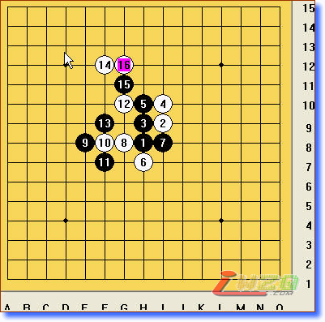
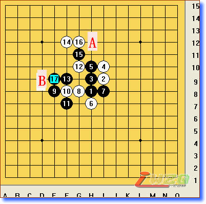

行棋上的思路形成战略上的压力和优势
#1 行棋上的思路形成战略上的压力和优势 作者：有志青年 发表时间：2007-9-2 13:12:13
昨天再看三手胜题解的时候，感觉要想取胜，必须在棋形上形成战略上的压力和优势才能够有胜出的机会，如果只是局部的先手，并不能让对手屈服，因为局部的进攻对手是有能力与之应对和抵抗的，但是一旦战略上的优势形成，那么对手就很难应对。在五子棋的行棋中，把棋盘上的棋子进行关联和呼应就是形成战略优势的一种体现，具体来讲，一子两用，或者叫一子双杀就是形成战略优势的典型代表。
下面这个图，我想就能体现出上述表达的思想：
图一中所示棋型，如何在两手之内形成战略胜势

正解答案是下图中的第17手棋，则黑方下一步就可以在A或者B形成四三，胜定，17就是成为连接两方势力的关键所在，实在是妙手。如果单纯的在一个方向进攻，你会发现对方是有能力去防守你的进攻的。

其实这个思路在我们的工作和生活中是否也有借鉴意义呢？
#2 Re:行棋上的思路形成战略上的压力和优势 作者：双队长 发表时间：2007-9-20 9:11:06
即使这样，但是我觉得15手那么明显，16手是不会下到那的